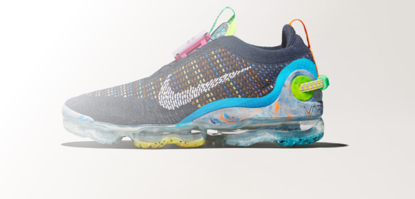
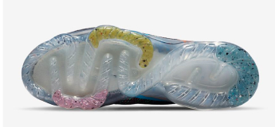
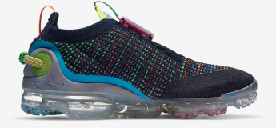

Nike Air VaporMax 2020 FK
Designed with sustainability in mind, the Nike Air VaporMax 2020 Flyknit is made from at least 50% recycled content by weight. That’s a lot of trash! As part of Nike’s journey towards lowering our impact, we’re discovering new ways to put our waste to good use. By utilizing leftover materials, recycled polyester, recycled foam, and a Nike Air sole made from at least 75% recycled TPU, the VaporMax 2020 Flyknit marks the next step towards our ultimate goal of zero carbon and zero waste.
$220


